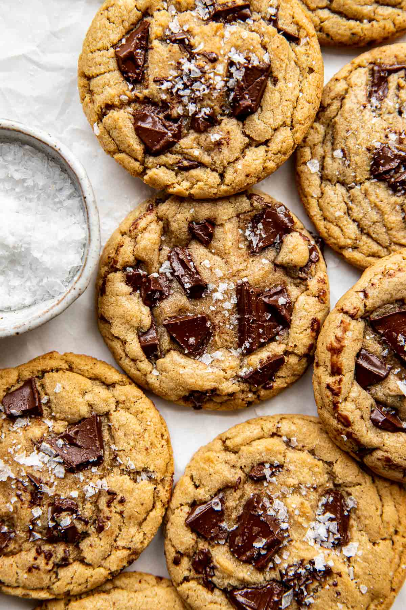

Brown Butter Cookies
This brown butter cookie recipe may just be one of the best cookie recipes
you’ll try. Have them fresh out the oven, with or without milk, and
prepare to eat the whole tray!

Ingredients
- 12 Tbsp. unsalted butter
- 1 cup dark brown sugar, packed
- 1/2 cup granulated sugar
- 1 large egg
- 1 large egg yoke
- 2 Tbsp. whole milk
- 1 Tbsp. pure vanilla extract
- 2 2/3 cups all purpose flour
- 1 tsp. salt
- 1/2 tsp. baking powder
- 2, 4oz bars semi sweet or dark chocolate, chopped
- flakey sea salt, for finishing
Steps
- Preheat the oven to 350°F.
Line 2 baking sheets with parchment paper or silicone baking mats.
Set aside.
- Brown the butter, and allow to cool for ~10-15 minutes.
- Beat in the sugars in to the brown butter using a hand mixer
- Add in the eggs, milk and vanilla. Beat again.
- Sift in the dry ingredients and fold just until combined.
- Fold in only 3/4 cupt of the chocolate chunks. Add a splash of
milk if still dry
- Dunk a cookie dough ball in the remaining chopped chocolate so the pieces
cover the top of the cookie dough balls, and repeat with remaining cookie dough balls.
- Place 6 cookies on a baking sheet at a time (Should yield ~22 cookies), and bake
for 10-11 minutes
- Take cookies out of the oven and let them rest for 2-3 minutes, before moving
to cooling rack and garnishing with flaky salt.